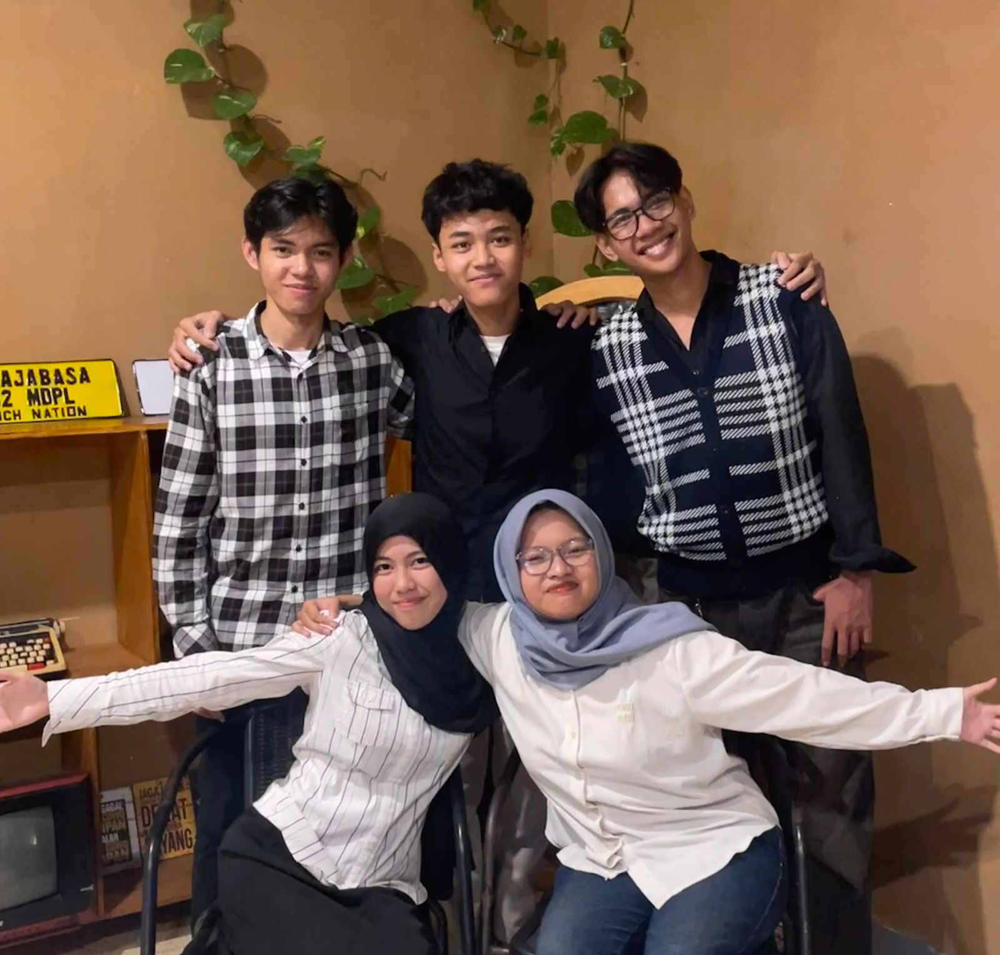
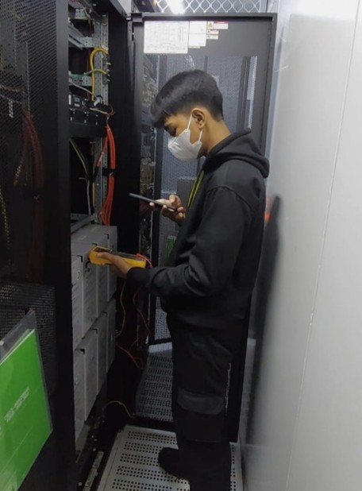
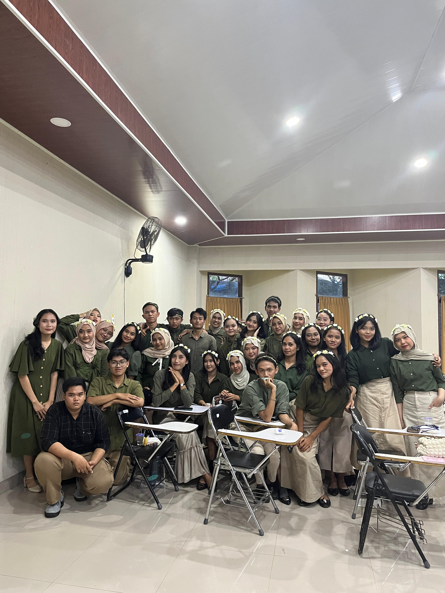
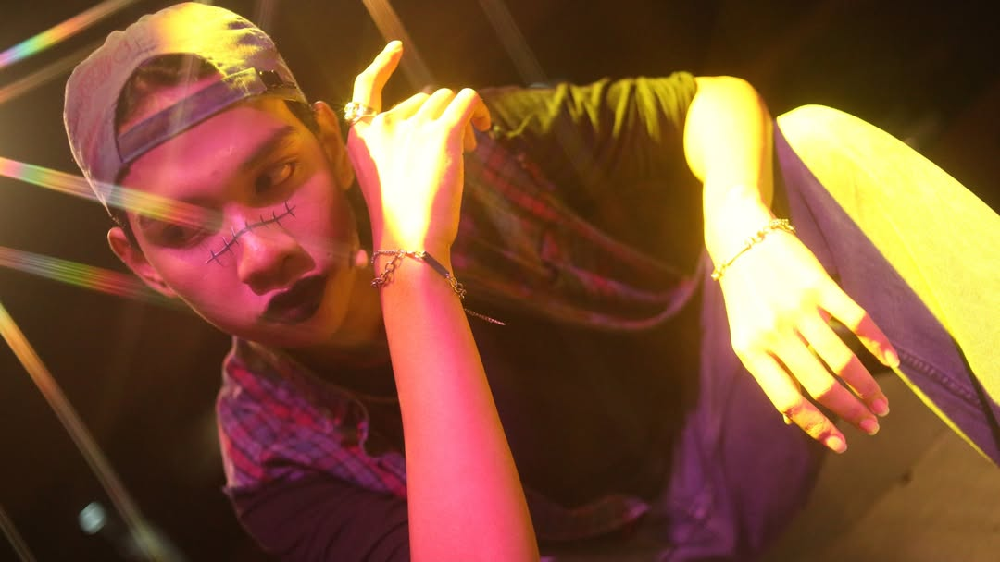

PROJECT 01
HIMAKOM UNILA
Organisasi.
Sebagai Sekretaris Umum Himpunan Mahasiswa Ilmu Komputer Universitas Lampung 2026.

PROJECT 02
RADIAN LABS
PR · External.
Public Relation & External Manager Radian Labs Batch 1.

PROJECT 03
CSS SHOWDOWN
Event.
Sekretaris Koordinator Divisi Humas CSS Showdown 2.0.

PROJECT 04
PKL JAKARTA
Work.
Staff Infrastruktur PT Global Inti Corporatama.

PROJECT 05
PSM UNILA
Musik.
Anggota aktif Paduan Suara Mahasiswa.

PROJECT 06
SENI TEATER
Pertunjukan.
Aktif dalam teater musikal sejak 2023.
